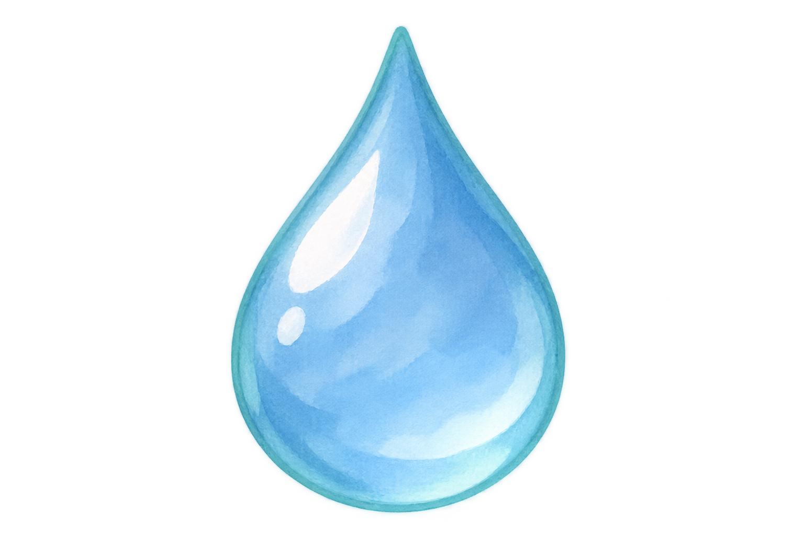
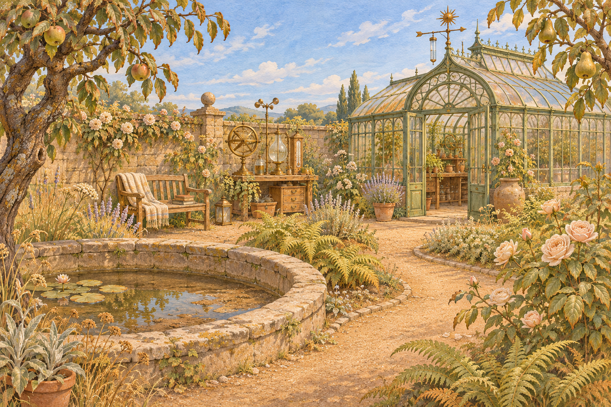
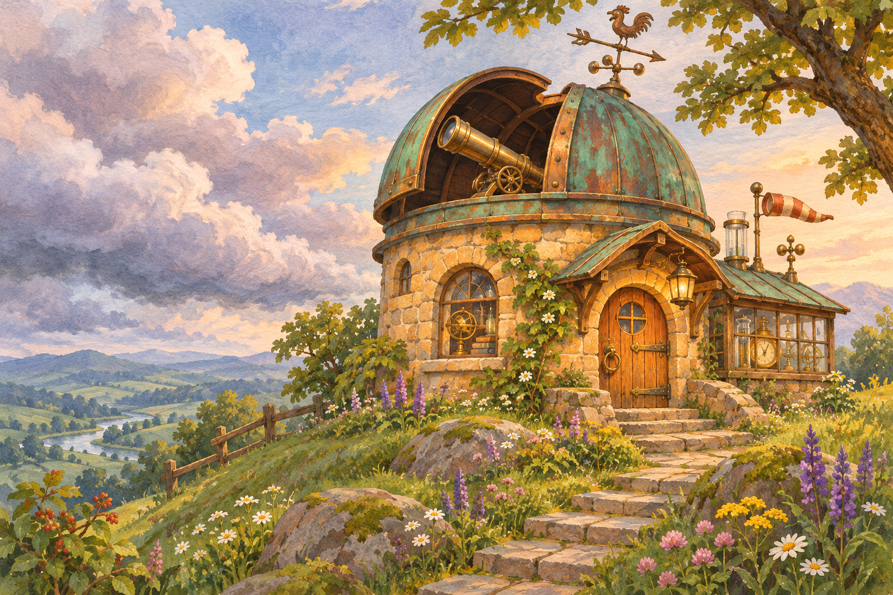

Глава 1 · Ботанический сад
Выберите предмет и нажмите на такой же.
Ветерок + облако → луч

Первое письмо
«Цветы поникли, а в пруду почти не осталось воды. Пришлите три дождевые тучи!»
Смотритель ботанического сада
1. Получайте капли в конденсаторе.
2. Соединяйте одинаковые предметы на поле.
3. Соберите три тучи и нажмите «Отправить погоду».
Можно нажимать или перетаскивать. В главе пять заявок. В финале сад откроется для гостей, а на карте откроется вторая глава — обсерватория.
Погодное ремесло
Два одинаковых предмета дают один следующего уровня. Соединять можно по всему полю.
У каждой цепочки четыре уровня. Тучи, солнца и воздушные потоки дальше не объединяются: они нужны для заявок. Если в письме указаны два вида погоды, соберите оба и нажмите «Отправить погоду».
Ветерок + облако → луч. Выберите ветерок на столе, нажмите «Разогнать облако», затем выберите облако. Оба предмета расходуются. Ход можно отменить.
Разные предметы меняются местами. На полке можно хранить три предмета. Ненужный предмет можно вернуть в прибор без награды и отменить это действие.
Стрелки перемещают фокус, Enter выбирает предмет, Escape снимает выбор.
Нажмите «Проверить звук», чтобы послушать аккорд.
Вы вернётесь к первому письму сада. Собранная погода и открытки пропадут, а все письма нужно будет выполнить заново.
Стол станет пустым, и вы вернётесь к первому письму Норы. Звёздную открытку можно будет получить снова.
Завершённый сад, просьба Леи и предметы на полке сохранятся.
Сразу после перезапуска можно нажать «Отменить ход», чтобы всё вернуть.
Награда за возврат не выдаётся. Последнее действие можно отменить.
Три места для предметов на будущее. Нажмите на предмет, чтобы вернуть его на свободную клетку стола.
Атлас добрых прогнозов


Для игры нужен JavaScript. Включите его в браузере и откройте страницу снова.